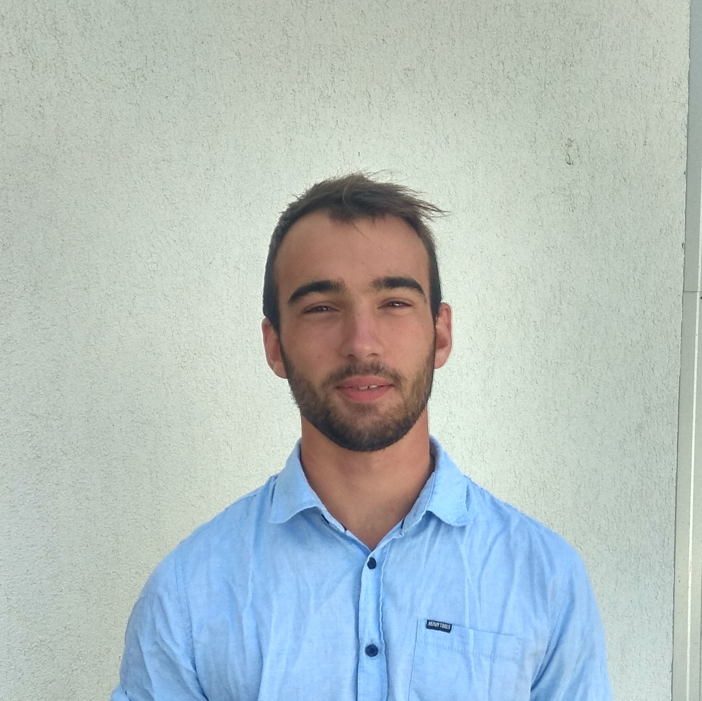

I am full-stack software developer, speciliased in measurement systems and IoT solutions. Passionate about great UI/UX.

IoT Solution developer
contract work, both hardware and software
You can read more about my Iot logging system here!
December 2011 - March 2013
Software developer at Sagax Communications Ltd.
Flask
PyVISA
PostgreSQL
APScheduler
Celery
At Sagax i was developing and maintaining a telecommunication measurement system which features
- measure controller
- data acquisition
- analyzation system
March 2018 -
UNIVERSITY OF TECHNOLOGY AND ECONOMICS - Budapest
Faculty of Electrical Engineering and Informatics
Informatics engineering
UNIVERSITY OF PANNONIA - Veszprem Hungary
Faculty of Electrical Engineering and Informatics
Informatics engineering
Sept 2017 -
Batsanyi Janos Secondary Grammar School - Csongrad
focused on robotics, math, physics and english.
Sept 2009 - May 2017
Personal Projects
Workflow
- Git flow
- Test driven development
- Agile Development
Some of my favorite programming languages & tools
- 1st Place - University of Szeged - SZTIIV 2017 Water Rocket 3d real-time data logging system